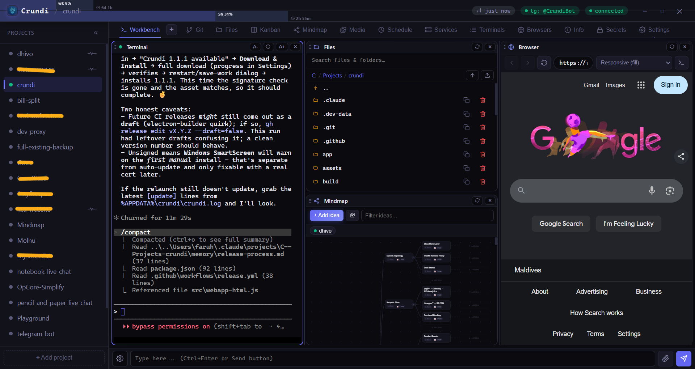
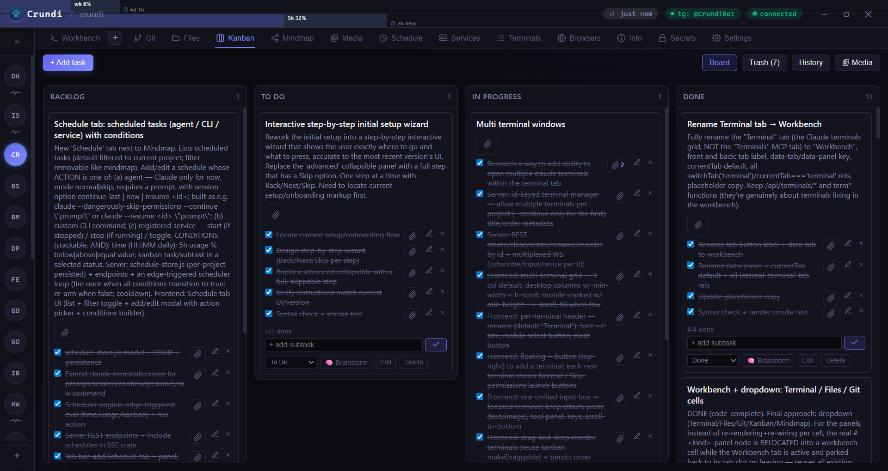
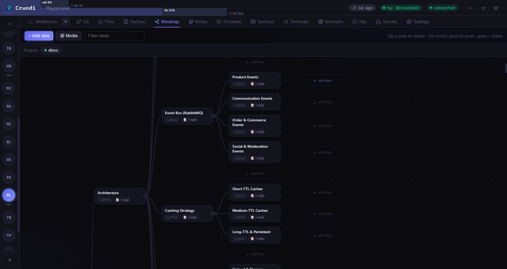
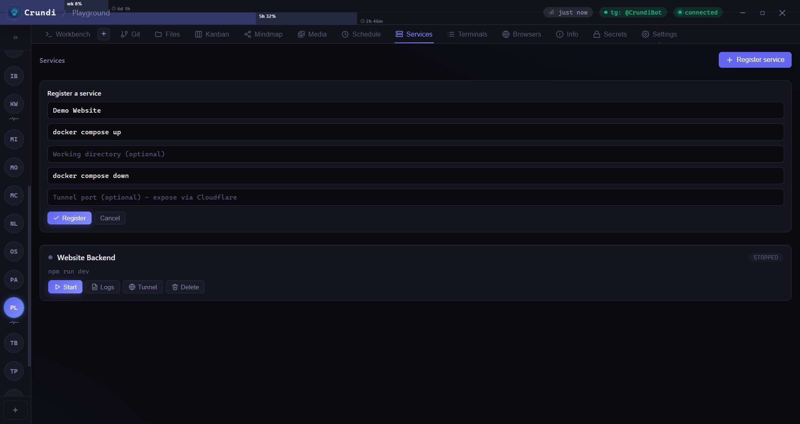
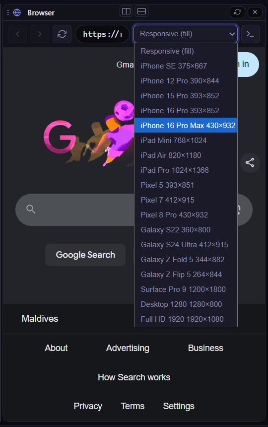
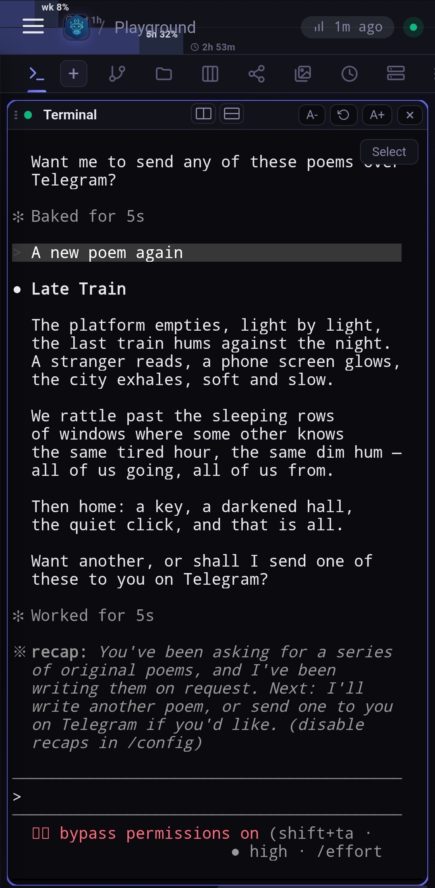
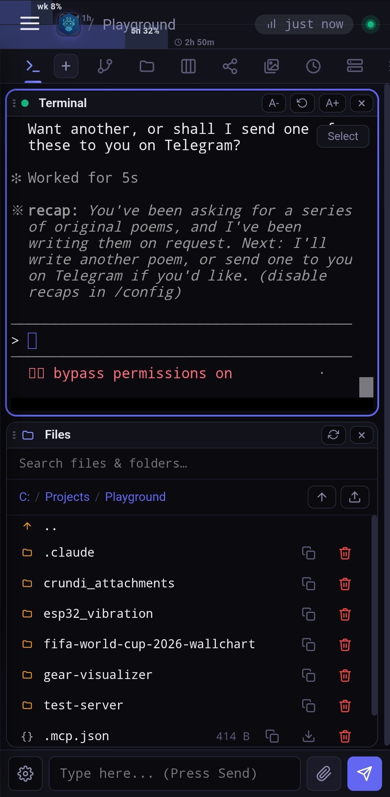
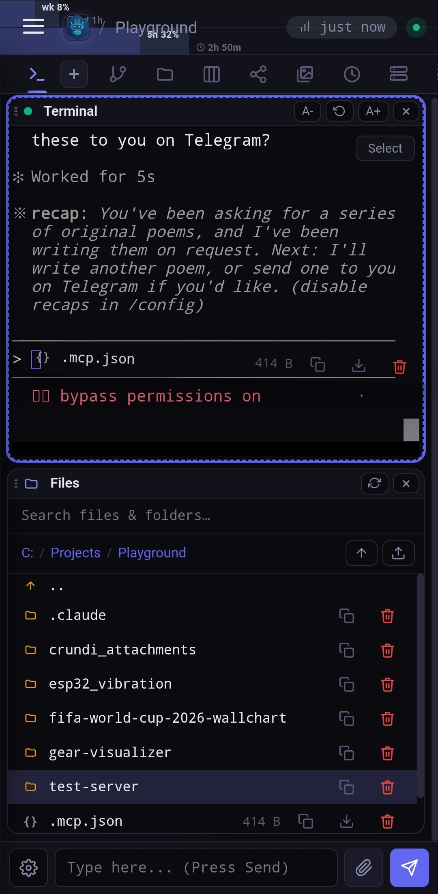
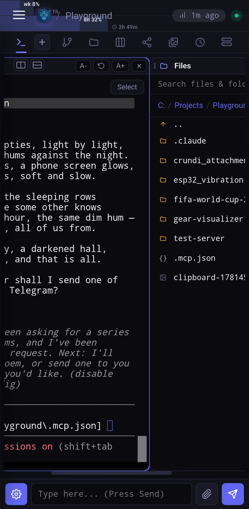

Your machine. Anywhere you are.
Crundi turns your PC into a remote workbench — agent terminals, files, git, kanban, mindmap, scheduling and more — reachable from a browser, the desktop app, or a Telegram chat.

Reach it however you're working
One self-hosted server, three front doors. Pick up exactly where you left off from any of them.
Any browser
Open the full workbench from any device on your network or over a Cloudflare tunnel. Nothing to install.
Desktop app
A native Windows app with tray controls, launch-at-startup and seamless one-click auto-updates.
Telegram bot
Drive agents, get notified, and send files straight from a chat — with smart, presence-aware alerts.
A whole workbench, not a single tool
Crundi gathers the things you actually do during a project into one dark, fast, panel-based surface.
Agent terminals
Spawn multiple AI-agent terminals per project. Resize, rename and reorder — full xterm with newline-key control.
File browser
Navigate, search, upload, copy and download files with drag-and-drop and auto-scroll across panels.
Git
See status, stage, diff and commit right inside the workbench, project by project.
Kanban
Backlog → done with tasks, sub-todos, history and restore. Agents can move cards too.
Mindmap
Branching idea maps with notes, links and pixel-aligned edges. Plan visually, then act.
Media
Collect images and clips, with clickable links that jump you straight to the related task or node.
Schedule
Run agents and jobs on a timer. Get a Telegram ping when a scheduled task fires.
Services
Register start/stop commands, stream logs, and expose any port through a Cloudflare tunnel.
Browsers
An embedded browser with device emulation — iPhone, iPad, Pixel, Galaxy, desktop and more.
Secrets
Store secrets safely and gate every access request behind an explicit, notified approval.
Plan the work, watch it move
Columns from backlog to done, each card with sub-todos, full history and one-tap restore. Your agents can move and update cards too — so the board reflects reality.
- Tasks, sub-todos and per-card history
- Optional notifications on status change
- Collapsible project rail on the left


Think in branches
Map out architecture and ideas as a living tree — add notes, link nodes, and let the panel compact itself when space is tight so the canvas stays front and centre.
- Notes and cross-links per node
- Crisp, pixel-aligned edges
- Searchable subtree navigation
Run it, expose it, watch it
Register a service with its start and stop commands, hit go, and stream the logs. Need it reachable from outside? Open a Cloudflare tunnel on any port in a click.
- Start / stop / restart with live logs
- One-click Cloudflare tunnels
- Crash & start notifications


Preview on every screen
Pull up any URL inside the workbench and flip between device profiles — iPhone, iPad, Pixel, Galaxy fold, Surface, Full HD — to check your work without leaving Crundi.
- 20+ device viewport presets
- Sits beside your terminal and files
- Drive it from agents over MCP
The whole workbench, in your pocket
Stack panels vertically or swipe through a snap layout. Drag a file toward an off-screen panel and the view scrolls to meet it.




Your agents, in your chats
Get pinged when an agent finishes or needs input — but only when you're away. Crundi knows when you're actively focused and stays quiet, with per-event Always / When Away / Never controls.
See bot setupTake your desk with you.
Install Crundi on your Windows machine and reach it from anywhere. Auto-updates keep it fresh.
Windows · unsigned build — SmartScreen may warn on first install